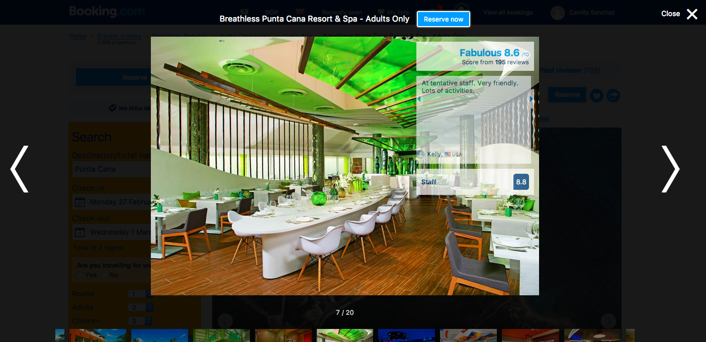
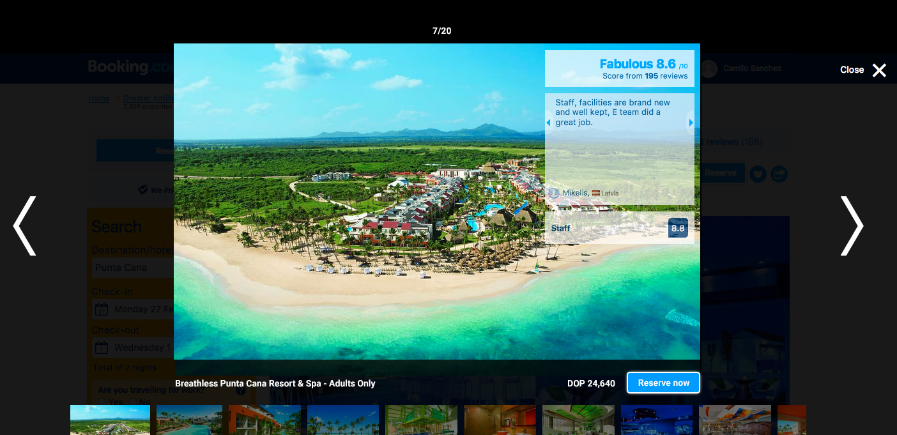

Presenting 4 ideas of actionable improvements that can be made to the site.
← Go backThe first thing a user does when arriving to the hotel page is to see the images of the hotel. Images help him visualize the experience he will have there. If photos convinced him, then he goes to next step: to reserve!
The reserve now button is almost invisible if placed above the slideshow.
Bookings can increase if we move the "reserve now" button to the bottom
But that "reserve now" button up there is far from the sight of where the main action is happening: between the interactions with the images and thumbnails. That's where the real action is happening, so I propose...
Booking.com current state This is the current design at booking.com
I propose to move that button to the bottom of the big image and add the price for the cheapest room from the configuration the user set up: Eg.: Two adults, two kids, two nights.
If the hypothesis is validated, Continue "milking the cows", go to next item and improve another part of the website.
If the hypothesis is not validated, iterate or pivot. Reshape ideas. Try adding information like duration of stay next to the price, clarifying to the user.
If the results of test are uncertain, iterate. Reshape ideas